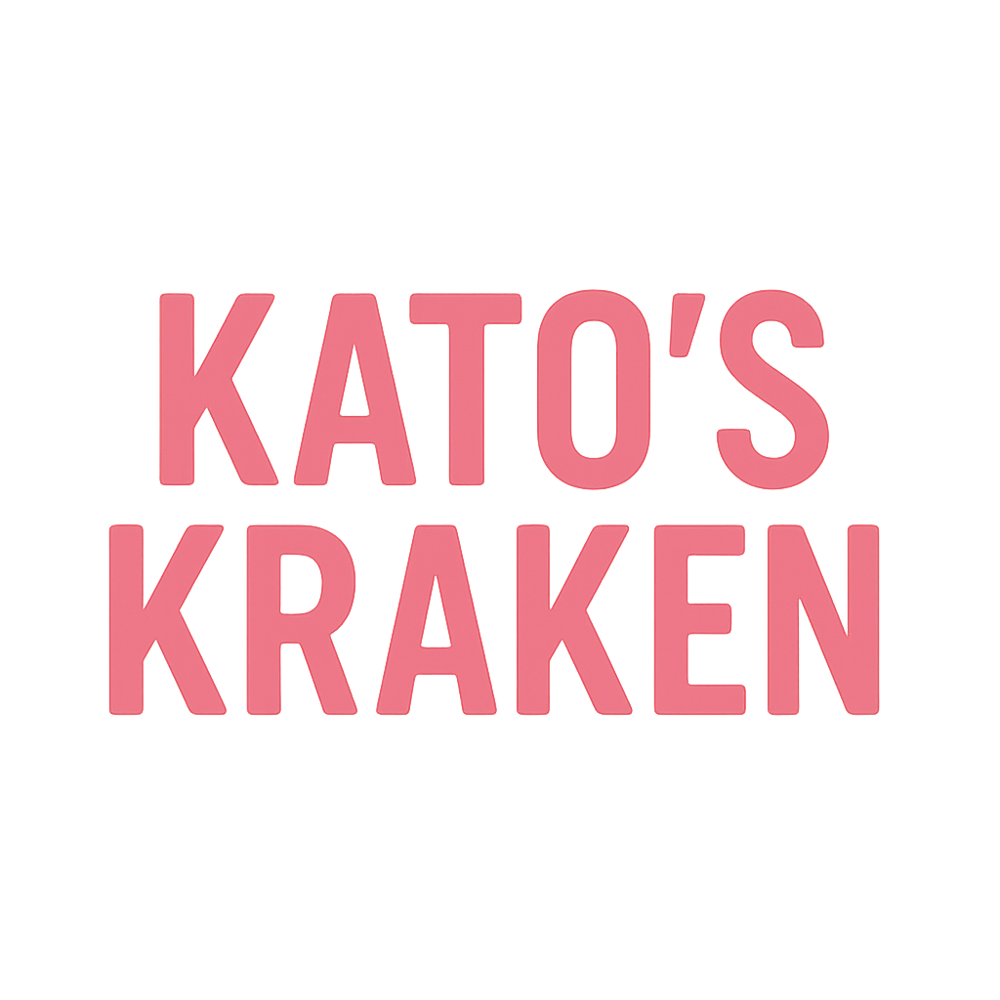
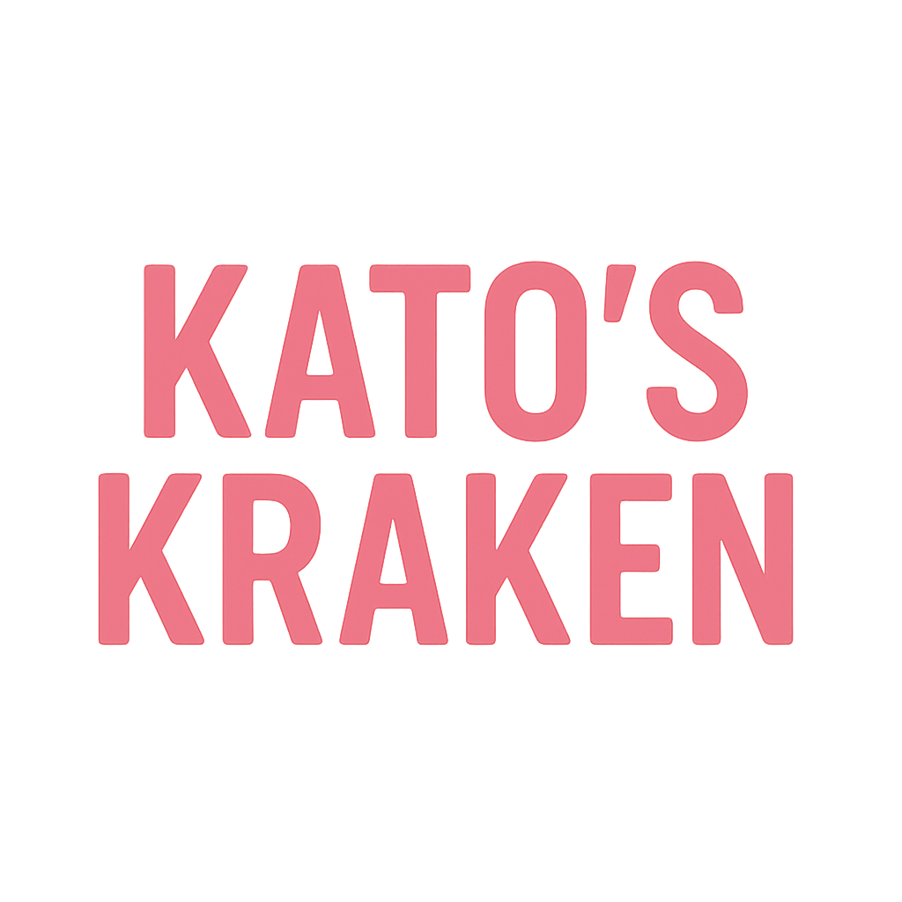
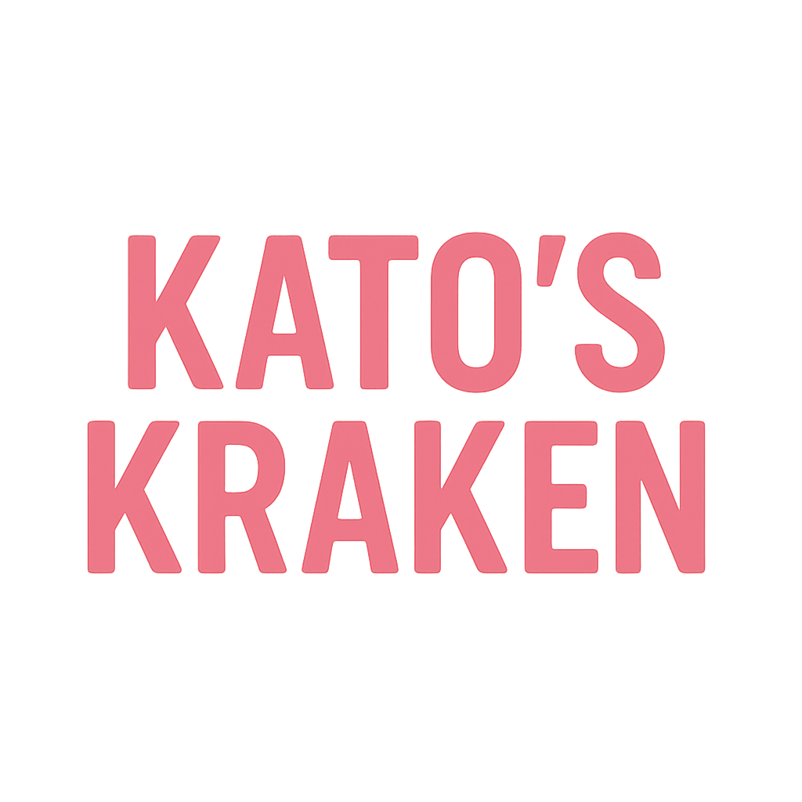
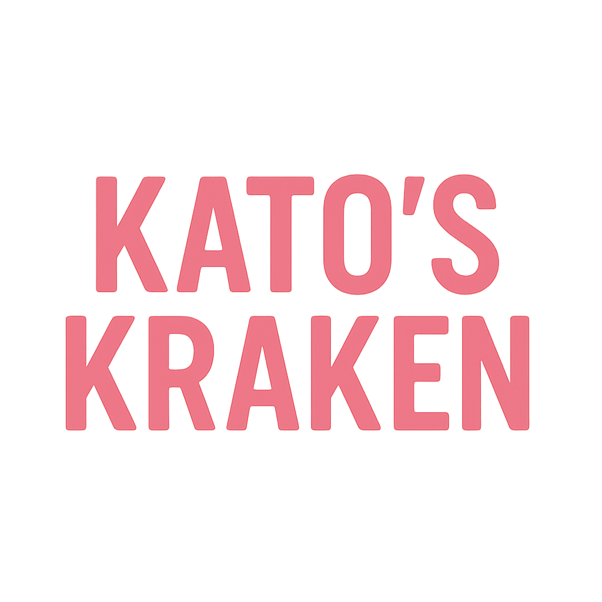

Be part of something bold, creative, and filled with heart.
Kato’s Kraken is currently a passion project and not an officially registered or funded game studio. All listed roles are unpaid and entirely voluntary. By applying, you acknowledge that your participation is for portfolio, learning, and collaboration purposes only, and does not constitute formal employment or compensation.
We're looking for a talented pixel artist to translate concept art into animated sprite sheets for characters, enemies, and NPCs. Design rich 2D environments and backgrounds that capture the emotional tone of each setting.
ApplyCollaborate directly with the CEO and founder to implement gameplay features and systems in Unity, ensuring the game design vision is executed with technical precision. Work across core mechanics, UI, and systems integration in a 2D side-scrolling environment.
ApplyBring key narrative moments to life by animating major scenes and character performances. Help shape the emotional tone and storytelling through expressive 2D animation in a stylized world.
ApplyDesign engaging and challenging levels that enhance gameplay and storytelling. Currently, have level ideas to work with.
ApplyKato's Kraken is an indie studio dedicated to crafting games with narrative soul, quirky humor, and creative freedom. We believe in remote flexibility, collaborative problem-solving, and supporting diverse voices in game development.